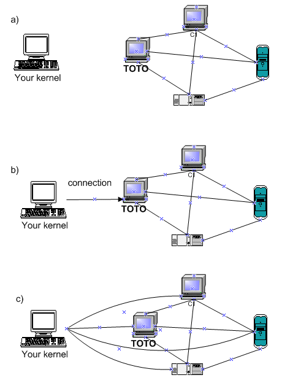
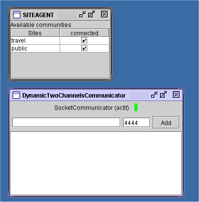
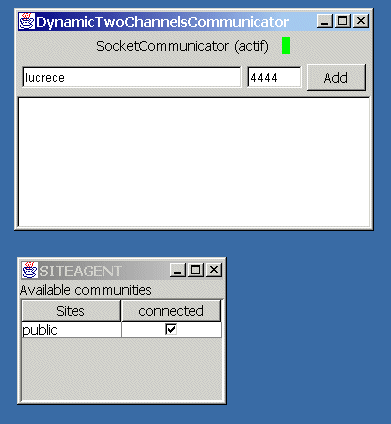
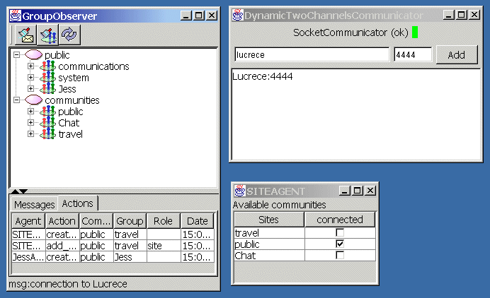
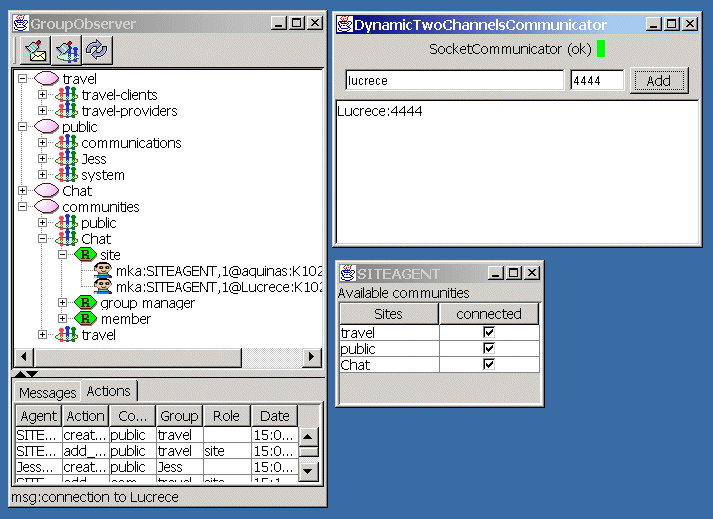

The communicator agent is used to give MadKit its distributed capabilities and allows MadKit platforms to form a network of kernels from which agents may communicate transparently.
MadKit in distributed mode use an important agent called the Communicator. This agent provides distributed message passing through socket connections. It runs a small socket server (on the port 4444 by default). To link with another platform, you have to give the host name and optionnally the port on which the distant Communicator is listening. For instance: khazar.lirmm.fr and 4444
It also handles organizational information synchronization on multiple distant agent kernel. Communities, groups and roles created on a platform in distributed mode are seen from the other connected platforms.
Once the connection is made between two kernels, all organization tables are synchronized. Thus groups (and their respective roles and agents) which have been created in distributed mode are automatically seen by both kernels, assuming that the two kernels are connected to the communities where these groups belongs.
Note: When you want to connect to an already formed network, i.e. several kernels connected together, just connect to one of them. All subsequent connections between your kernel and the other ones will be done automatically. The following figure shows such a connection. When a kernel, called yourKernel wants to connect to an already formed network (a), it just has to connect to one of them, for instance the kernel located on the toto host (b). Then this kernel is connected to all the other kernel (c).

Procedure 1.
From the MadKit Desktop, you may Launch the "Communicator" either by selecting the Agents>Communicator menuitem, or, from the directory explorer, by double clicking on the DynamicTwoChannelsCommunicator agent situated in the Communicator.jar Jar.

Its property box lists the current communication port (4444 by default). If the server starts up correctly, the small LED on the agent turns green. You may notice the SiteAgent window which displays the set of available communities. Here, the local kernel is connected to two communities: the public community which is the general community to which all kernels are automatically connected (you cannot disconnect your kernel from the public community), and the travel community which is created by the travelagents demo application.
To connect with a remote kernel, just type its hostname (and port if necessary). Let us suppose that we want to connect with a host called lucrece (type your desired host name, lucrece is a fake name). The host name maybe any correct Internet name, such as kant.lirmm.fr for instance).

Once the "Add" button clicked, if the distributed mode bootstrap succeeded, a MadKit kernel name (actually a host name) appears in the Communicator.

Communities appear in the SiteAgent window. If you want to use the applications associated to specific communities, check the related items in this window. This will “connect” the kernel to those communities, making the groups, roles and agents of this communities accessible from it. (Note: you may have to click the refresh button of the browser, to see the new communities in the browser).

To test the distributed mode, you can use any classic demo, see for instance the {{link }}travel demo or the {{link}} Chat application.
For strange reasons, it is not possible to disconnect a kernel from a network of kernels. For the moment, the best thing to do is to simply quit MadKit. This will be solved in the future.
The communicator is an agent and, as such, it may interact with other agents.
Its communications are very simple. The communicator may be asked to attempt
connexion to another kernel and get the port on which the communicator is
listening. All messages are messages of the class StringMessage.
You can pilot the Communicator from another agent by sending it a simple StringMessage with "add-host machineport" as the content. It will attempt connexion upon message reception.
It is also possible to know the port on which the Communicator is runing by sending a StringMessage with get-port in content string.
It is possible to automatically run a communicator at launch time, using among the two following possibilities:
Start a MadKit kernel with --communicator-on. For instance, type the following command:
$java madkit.platform.console.Booter --communicator-on |
You may also use a configuration file which contains a Communicator agent. Insert the following line into a configuration file:
<launch-agent name="communicator" type="Java" code="agents.network.communicator.DynamicTwoChannelsCommunicator"/> |